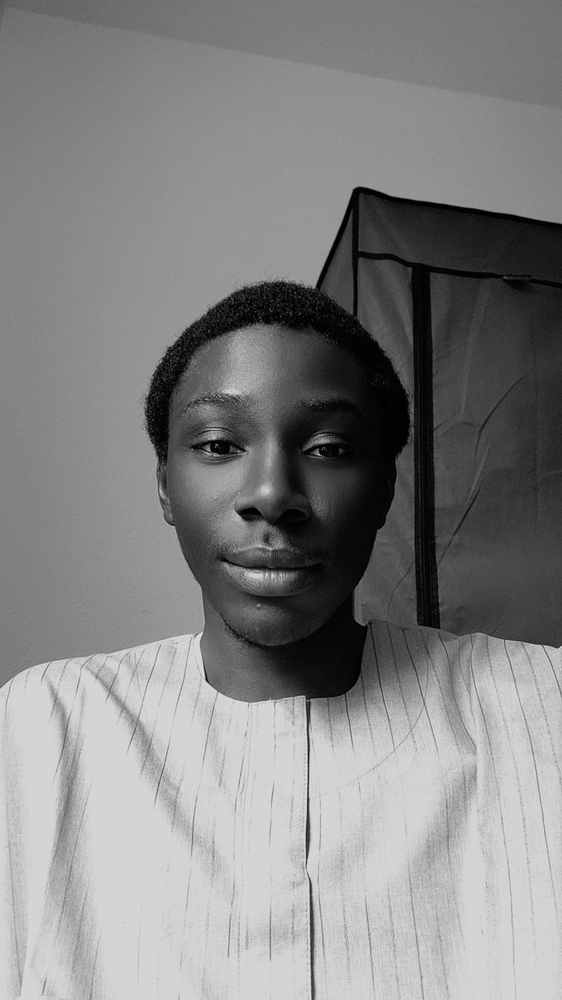

Abdulroqib Oladipo
Bremen, Germany
Beginner Front-end developer and self-driven builder.
Github LinkedIn Twitter/X Frontend Mentor freeCodeCamp PortfolioBeginner Front-end developer and self-driven builder.
Github LinkedIn Twitter/X Frontend Mentor freeCodeCamp Portfolio